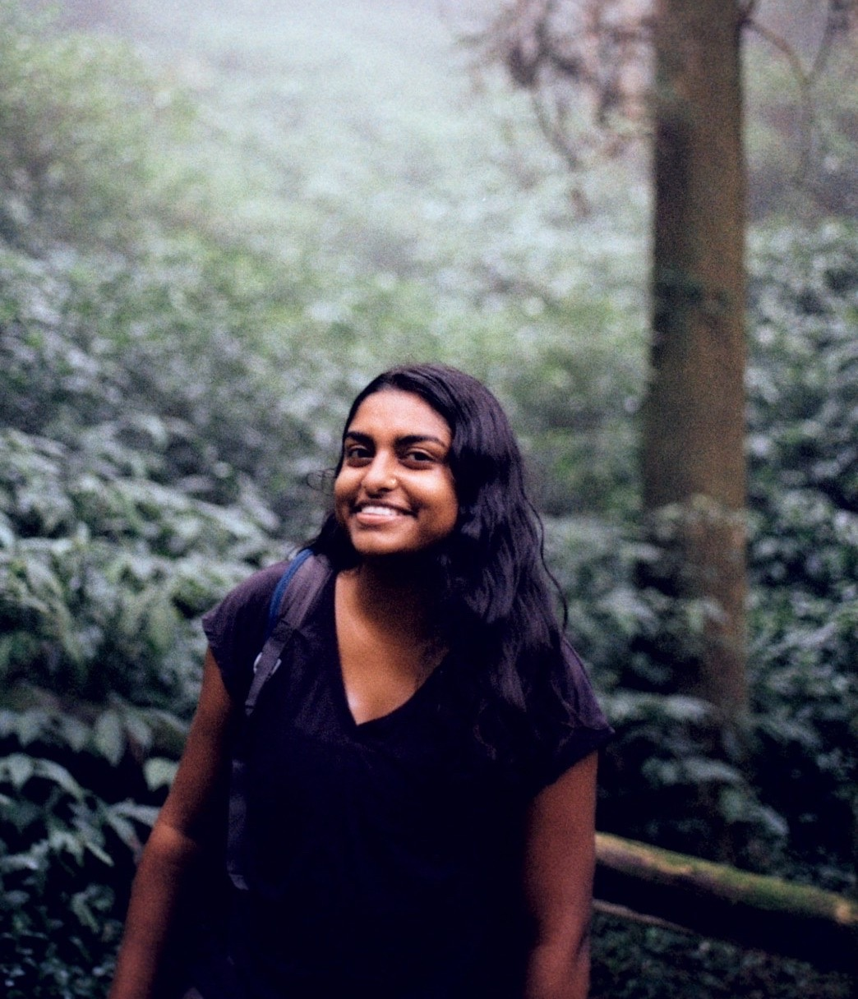

I'm a reporter and documentary filmmaker based in Brooklyn, NY.

I'm currently covering the activism and grassroots mobilization in the climate movement at the Pulitzer-prize winning nonprofit news outlet, Inside Climate News. My reporting interests include activism and social mobilization, protest and movement freedoms, corporate malfeasance, and fossil fuel finance.
I graduated from Northwestern University in 2021 and spent a year in Taiwan on a Fulbright-National Geographic Storytelling Fellowship, documenting stories of climate action and resilience through photo, film, audio, and written media. I also spent a lot of time traipsing around mountains and living in a tent.
I'm a National Geographic Explorer and have completed fellowships with Inside Climate News, The Lever, and the Solutions Journalism Network. My 2021 short documentary film, "Behind the Mask: Voices from the Frontline," won a Chicago/Midwest college Emmy and premiered in the American Documentary Film Festival. I also participated in One World Media's 2023 Global Short Docs Forum for filmmakers from around the world.
These days, I am reading, writing, filming, and generally trying my best to combat existential dread. If you're interested in my work, please reach out by email, Twitter, or Instagram, and say hello!